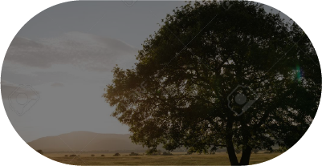
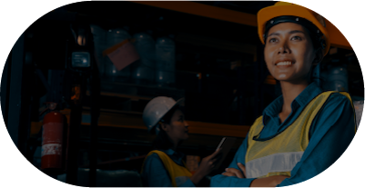

五大行動

減少碳足跡 Reduce Carbon Footprint

落實人權基本勞動權益 Prioritize Human Rights and Labor Practices
重視企業社會責任 Emphasize on Corporate Social Responsiibility

推動循環經濟 Transparency in Production Process
透明化製程環保無毒 Advocate for Circular Economy